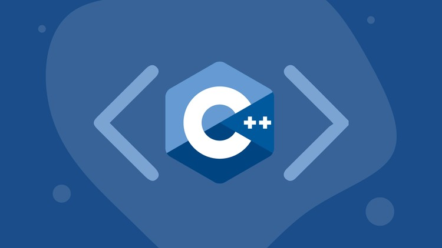

What Is C++?
C++ is a programming language used when programs need to be fast and efficient. It gives programmers more control over how a program uses memory and computer resources. Because of this, C++ is common in performance-heavy software.
C++ is used in video games, operating systems, embedded systems, browsers, and software where speed is important. It is more complex than Python and Java, but it is useful for learning how computers work at a deeper level.

Common Uses of C++
- Game development
- Operating systems
- Embedded systems
- Browsers and performance-heavy software
Why C++ Is Important
C++ is important because it teaches programmers about performance, memory, and how software interacts with hardware. Even though it can be harder for beginners, learning C++ can make other programming concepts easier to understand later.
Source
Learn more from Standard C++ Foundation.